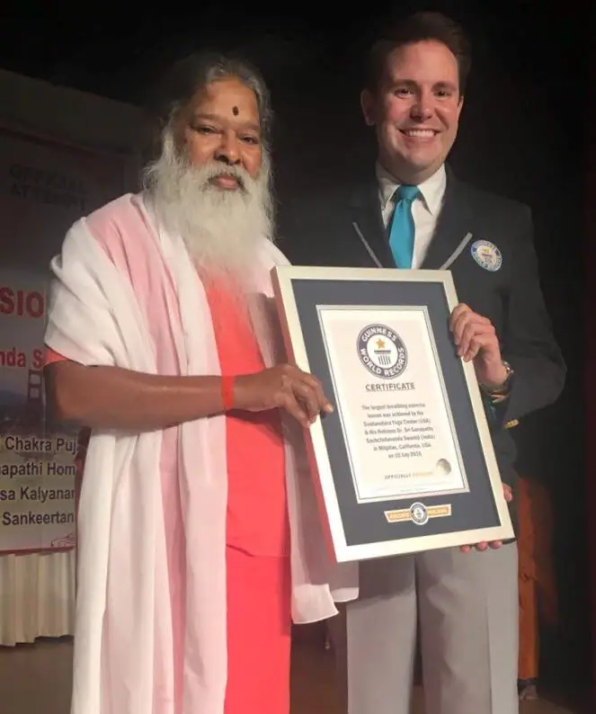

गिनीज़ वर्ल्ड रिकॉर्ड · 10 जुलाई 2016
सबसे बड़ा श्वास-अभ्यास पाठ
दशावतार योग सेंटर (अमेरिका) द्वारा आयोजित एक कार्यक्रम में, अमेरिका के कैलिफ़ोर्निया स्थित मिलपिटास के इंडिया कम्युनिटी सेंटर में, श्री स्वामीजी ने एक ही स्थान पर सबसे बड़े प्राणायाम (श्वास व्यायाम) पाठ का नेतृत्व किया।
उन्होंने तनाव कम करने और स्वास्थ्य सुधारने में श्वास की भूमिका समझाई: नाड़ियों, नाड़ी केंद्रों और श्वास के प्रतिरूपों के बीच संबंध, निरंतर एकाग्रता के साथ लंबी श्वास का महत्त्व, और यह कि व्यवस्थित श्वसन रोगों तथा जीवनशैली संबंधी बीमारियों में कैसे सहायक होता है।
श्री स्वामीजी कई दशकों से मुद्राओं, क्रियाओं और नाड़ी शुद्धि व्यायामों पर प्रयोग करते आए हैं; प्राणायाम के प्रति उनके वैज्ञानिक दृष्टिकोण से विश्व भर में लाखों लोग लाभान्वित हुए हैं।